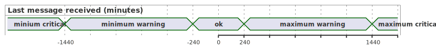

Escalation Levels
Ein Eskalationslevel kann 4 Werte enthalten: min_critical, min_warning, max_warning, max_critical. Alle Werte sind Integer und beziehen sich auf die absoluten Werte bei einfachen Zählern wie queued_messages. Bei Zeitstempeln wie last_message_received_at dagegen entsprechen die Levels Minuten-Werte als Differenz zur aktuellen Zeit. Ein Beispiel:
-
min_critical: 1440 (24h) -
min_warning: 240 (4h) -
max_warning: 240 (4h) -
max_critical: 1440 (24h)
Wenn der Zeistempel im Vergleich zur aktuellen Zeit älter als 24h ist, dann ist der Ergebnis critical, wenn der Zeitstempel dagegen nur 1h alt ist dann ist das Ergebnis ok (usw.).

Abbildung 1. Last Message received at